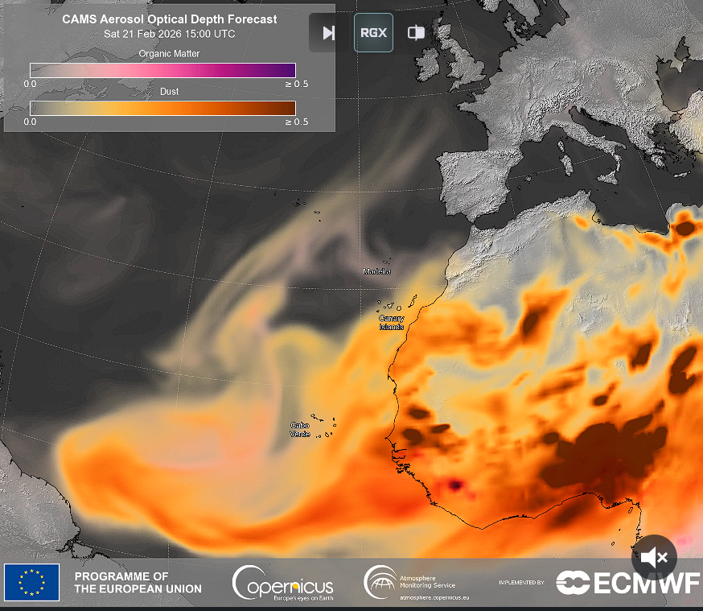

O que são as poeiras do Saara?
As poeiras do Saara são partículas finas de areia e solo que são levantadas pelo vento e podem ser transportadas por grandes distâncias.
A qualidade do ar deve ser monitorizada & acompanhada pelas autoridades.
Impacto na qualidade do ar

Cuidados a ter
- evitar atividade física intensa no exterior
- usar máscaras protetoras quando for necessário sair ao ar livre
- manter os ambientes bem ventilados
- manter-se hidratado
- acompanhar avisos das autoridades de saúde